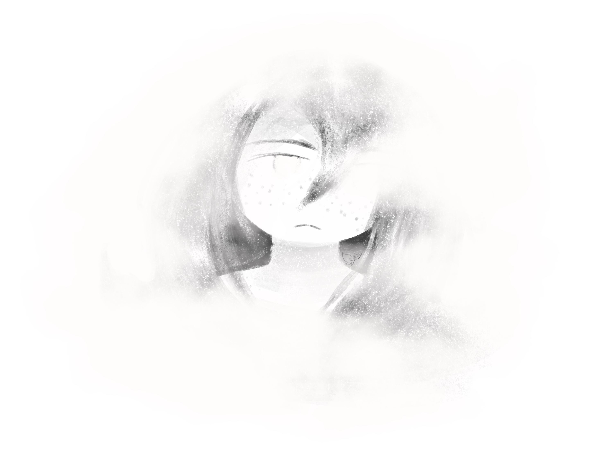

Throwing yourself endlessly at this task won't do you any good. You decide to leave it for a bit, and come back to it later. Knowing this and actually executing it are two very different things, you have already learned. You try to stand.
You cannot.
You claw at the fog that's dulled your thoughts and numbed your body. You cannot grasp it. You cannot move it. You cannot do anything.

Your eyes burn, both from not blinking and from being fixed on the same point. You don't know how much time passes before the fog recedes enough for you to take shaky control back. You clumsily get to your feet, the process requiring you to lean your weight against the desk and multiple attempts. You don't go far, collapsing onto a nearby couch. You feel horrible, shaky and nauseous and so very tired. You close your eyes.
Get some rest. You're too tired to do anything else.